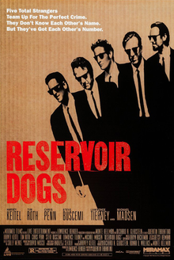
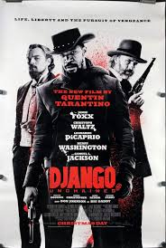

Quentin Tarantino
Filmography Of Movie Director And Writer Quentin Tarantino.

Reservoir Dogs Poster
.png)
Jackie Brown 1997 Poster

Once Upon A time in Hollywood Poster

Django Unchained Poster

Inglorius Basterds Poster

The Hateful 8 Poster
Quentin Tarantino Movies.
- 1992 Resevoir Dogs:is a 1992 American crime film written and directed by Quentin Tarantino in his feature-length debut. It stars Harvey Keitel, Tim Roth, Chris Penn, Steve Buscemi, Lawrence Tierney, Michael Madsen, Tarantino, and Edward Bunker as diamond thieves whose planned heist of a jewelry store goes terribly wrong. The film depicts the events before and after the heist. Kirk Baltz, Randy Brooks, and Steven Wright also play supporting roles. It incorporates many motifs that have become Tarantino's hallmarks: violent crime, pop culture references, profanity, and nonlinear storytelling.
- 1994 Pulp Fiction:American neo-noir black comedy crime film written and directed by Quentin Tarantino, who conceived it with Roger Avary.Starring John Travolta, Samuel L. Jackson, Bruce Willis, Tim Roth, Ving Rhames, and Uma Thurman, it tells several stories of criminal Los Angeles. The title refers to the pulp magazines and hardboiled crime novels popular during the mid-20th century known for their graphic violence and punchy dialogue.
- 2003 Kill Bill Volume 1: is a 2003 American martial arts film written and directed by Quentin Tarantino. It stars Uma Thurman as the Bride, who swears revenge on a team of assassins (Lucy Liu, Michael Madsen, Daryl Hannah, and Vivica A. Fox) and their leader, Bill (David Carradine), after they try to kill her and her unborn child. Her journey takes her to Tokyo, where she battles the yakuza.
- 2004 Kill Bill Volume 2: is a 2004 American martial arts film written and directed by Quentin Tarantino. It stars Uma Thurman as the Bride, who continues her campaign of revenge against the Deadly Viper Assassination Squad (Lucy Liu, Michael Madsen, Daryl Hannah, and Vivica A. Fox) and their leader Bill (David Carradine), who tried to kill her and her unborn child.
- 2005 Death Proof:is a 2007 American exploitation slasher film written, directed and shot by Quentin Tarantino. It stars Kurt Russell as a stuntman who murders young women in staged car accidents using his "death-proof" stunt car. It co-stars Rosario Dawson, Vanessa Ferlito, Jordan Ladd, Rose McGowan, Sydney Tamiia Poitier, Tracie Thoms and Mary Elizabeth Winstead, with stuntwoman Zoë Bell as herself. The film pays homage to the slasher, exploitation and muscle car films of the 1970s.
- 2009 Inglorious Basterds:is a 2009 war film[7] written and directed by Quentin Tarantino. Starring Brad Pitt, Christoph Waltz, Michael Fassbender, Eli Roth, Diane Kruger, Daniel Brühl, Til Schweiger and Mélanie Laurent. the film tells an alternate history story of two plots to assassinate Nazi Germany's leadership, one planned by Shosanna Dreyfus (Laurent), a young French Jewish cinema proprietor, and the other by a team of Jewish American soldiers led by First Lieutenant Aldo Raine (Pitt). Christoph Waltz co-stars as Hans Landa, an SS colonel in charge of tracking down Raine's group.
- 2012 Django Unchained: is a 2012 American revisionist Western[4] film written and directed by Quentin Tarantino, starring Jamie Foxx, Christoph Waltz, Leonardo DiCaprio, Kerry Washington, and Samuel L. Jackson, with Walton Goggins, Dennis Christopher, James Remar, Michael Parks, and Don Johnson in supporting roles. Set in the Old West and Antebellum South, it is a highly-stylized, heavily-revisionist tribute to Spaghetti Westerns, in particular the 1966 Italian film Django by Sergio Corbucci, whose star Franco Nero has a cameo appearance.
- 2015 The Hateful Eight (Sometimes marketed as The H8ful Eight) is a 2015 American Revisionist Western thriller film written and directed by Quentin Tarantino. It stars Samuel L. Jackson, Kurt Russell, Jennifer Jason Leigh, Walton Goggins, Demián Bichir, Tim Roth, Michael Madsen, and Bruce Dern as eight strangers who seek refuge from a blizzard in a stagecoach stopover some time after the American Civil War.
- 2019 Once Upon A Time In Hollywood:is a 2019 comedy-drama film written and directed by Quentin Tarantino. Produced by Columbia Pictures, Bona Film Group, Heyday Films, and Visiona Romantica and distributed by Sony Pictures Releasing, it is a co-production between the United States, United Kingdom, and China. It features a large ensemble cast led by Leonardo DiCaprio, Brad Pitt, and Margot Robbie. Set in 1969 Los Angeles, the film follows a fading character actor and his stunt double as they navigate the rapidly changing film industry.
Since 2019 Tarantino has Not Appeared in A directoral or Acting Role on A movie. Neither has He made A cameo in any Tv show which is Unlikely of him. Word is out that he has been Writing a movie with Brad Pritt Who is frequent of his movies in mind.This project is rumoured To be released in 2023.